Глава 07
Средства измерительной техники
От меры и измерительного прибора до системы: назначение, устройство и метрологические характеристики средств измерительной техники.
Виды средств измерительной техники
Средства измерительной техники – это обобщающее понятие, охватывающее технические средства, специально предназначенные для измерений.
К средствам измерительной техники относят средства измерений, эталоны, измерительные системы, измерительные установки, измерительные принадлежности, средства сравнения, стандартные образцы.
Средство измерений – это техническое средство, предназначенное для измерений и имеющее нормированные (установленные) метрологические характеристики.
Классификация:
Мера – это средство измерений, которое воспроизводит в процессе использования или постоянно хранит величины одного или более данных родов,
с приписанными им значениями.Разновидности мер:
однозначная мера – мера, воспроизводящая физическую величину одного размера (например, гиря 1 кг);
Номинал гири — 1 кг; однозначная мера воспроизводит одно значение массы. многозначная мера – мера, воспроизводящая физическую величину разных размеров (например, штриховая мера длины);
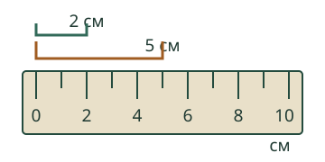
Одна линейка воспроизводит разные длины: например, 2 см и 5 см. набор мер – комплект мер разного размера одной и той же физической величины, предназначенных для применения на практике, как в отдельности, так и в различных сочетаниях (например, набор концевых мер длины);
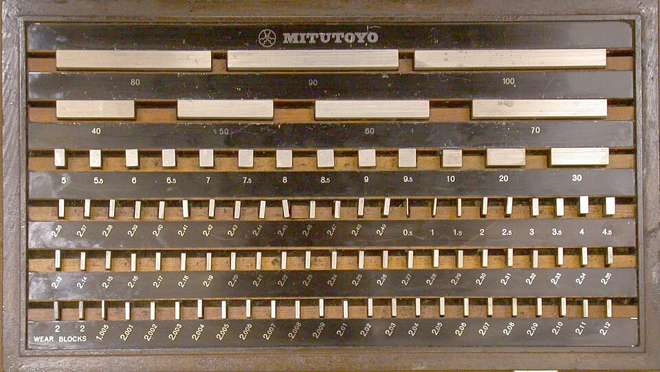
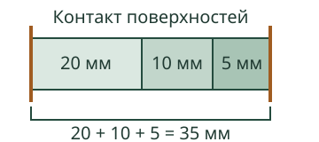
Меры применяют отдельно или составляют блок: длины между измерительными поверхностями складываются. магазин мер – набор мер, конструктивно объединенных в единое устройство, в котором имеются приспособления для их соединения в различных комбинациях (например, магазин электрических сопротивлений).
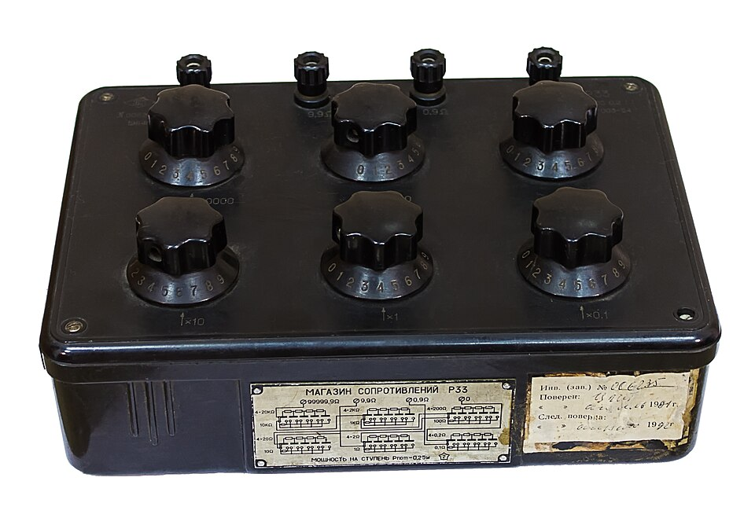
Переключатели соединяют меры сопротивления внутри одного устройства.
Измерительный прибор – средство измерений, предназначенное для выработки сигнала измерительной информации в форме, доступной для непосредственного восприятия.
по виду выходной величины:
аналоговый измерительный прибор – измерительный прибор, показания которого или выходной сигнал являются непрерывной функцией изменений измеряемой величины.
Например, стрелочный вольтметр, стеклянный ртутный термометр;
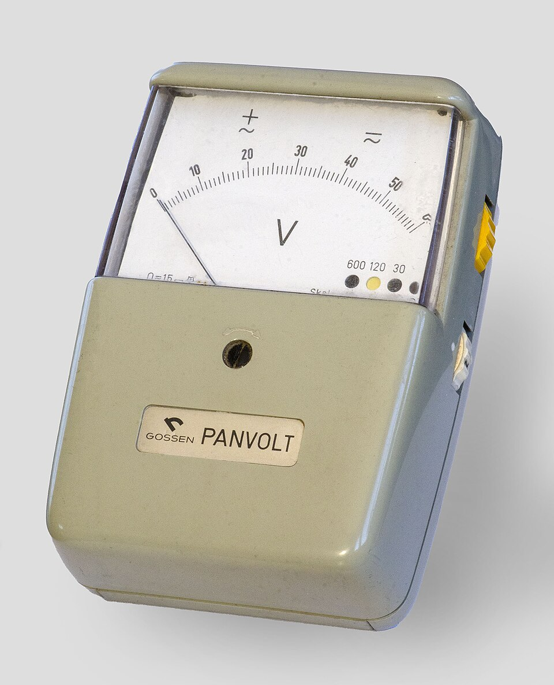
Стрелка аналогового прибора непрерывно меняет положение относительно шкалы. цифровой измерительный прибор – измерительный прибор, показания которого представлены в цифровой форме.

Показания цифрового прибора представлены числом на табло. Обозначения: V — напряжение; A — сила тока; Ω — электрическое сопротивление.
по способу индикации значений измеряемой величины:
показывающий измерительный прибор – измерительный прибор, допускающий только отсчитывание показаний значений измеряемой величины.
Например, микрометр, аналоговый или цифровой вольтметры;
Показывающий прибор позволяет считать текущее показание. регистрирующий измерительный прибор – измерительный прибор,
в котором предусмотрена регистрация показаний (в аналоговой или цифровой форме, в виде диаграммы, путем печатания на бумажной или магнитной ленте).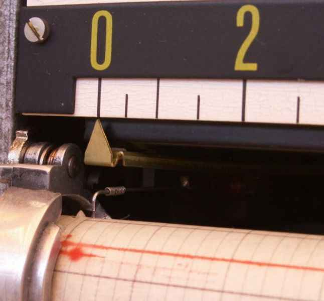
Перо самописца оставляет красный след на движущейся бумажной ленте.
Измерительные установки – это совокупность функционально объединенных и расположенных в одном месте мер, измерительных приборов, измерительных преобразователей и других устройств, предназначенная для измерений одной или нескольких величин.
Например, установка для поверки амперметров и вольтметров постоянного тока содержит источники питания, эталонные приборы, резисторы в термостате.
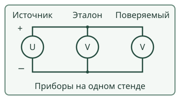
Установка объединяет источник и приборы в одном месте для общей измерительной задачи. Измерительная машина – это установка крупных размеров, предназначенная для точных измерений физических величин, характеризующих изделие.
Пример: координатно-измерительная машина.

Портальная координатно-измерительная машина: стол, подвижный мост и измерительный щуп. Измерительный преобразователь – средство измерений или его часть, служащее для получения и преобразования информации об измеряемой величине в форму, удобную для обработки, хранения, дальнейших преобразований, индикации или передачи.
Основные группы:
масштабные, ослабляющие или усиливающие измерительный сигнал (измерительные трансформаторы, делитель напряжения, усилители);
фильтры, отделяющие сигнал от помех;
аналого-цифровые преобразователи;
преобразователи неэлектрических величин в пропорциональные им электрические (датчики).
Примеры: термопара в термоэлектрическом термометре; измерительный трансформатор тока; тензодатчик; биметаллическая пластина.
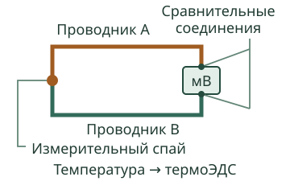
Термопара преобразует температурное воздействие в термоЭДС; для определения температуры учитывают температуру сравнительных соединений. Измерительная система – совокупность средств измерений и других средств измерительной техники, размещенных в разных точках объекта измерения, функционально объединенных с целью измерений одной или нескольких величин, свойственных этому объекту.
Примеры:
Измерительная система теплоэлектростанции, позволяющая получать измерительную информацию о ряде величин в разных энергоблоках. Она может содержать сотни измерительных каналов.
Радионавигационная система для определения местоположения различных объектов, состоящая из ряда измерительно-вычислительных комплексов, разнесенных в пространстве на значительное расстояние друг от друга.
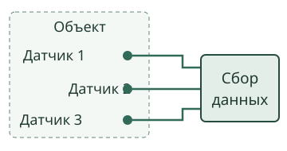
Система объединяет измерительные каналы, размещённые в разных точках объекта. Измерительные принадлежности – вспомогательные средства, служащие для обеспечения необходимых условий для выполнения измерений с требуемой точностью.
Измерительные принадлежности предназначены для защиты от воздействия влияющих величин.
Примеры: термостат; барокамера; специальные противовибрационные фундаменты; устройства, экранирующие влияние электромагнитных полей; тренога для установки прибора по уровню.
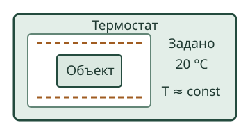
Термостат поддерживает заданную температуру среды вокруг объекта измерения. Виртуальные приборы состоят из персонального компьютера с программным обеспечением и встроенной в него аналого-цифровой платой сбора данных.
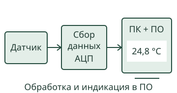
Виртуальный прибор объединяет сбор данных с обработкой и индикацией в программе.
Фотографии и лицензии
Фотографии уменьшены без кадрирования.
- Набор концевых мер длины (Описание по-русски) — Glenn McKechnie; CC BY-SA 3.0 (Лицензия по-русски).
- Магазин сопротивлений (Описание по-русски) — Вячеслав Митрофанов; CC BY-SA 3.0 (Лицензия по-русски).
- Стрелочный вольтметр (Описание по-русски) — Amfeli; CC BY 4.0 (Лицензия по-русски).
- Цифровой мультиметр (Описание по-русски) — Cjp24; CC BY-SA 3.0 (Лицензия по-русски).
- Регистрирующий прибор (Описание по-русски) — Rolandhoernig; Общественное достояние (Public domain).
- Координатно-измерительная машина (Описание по-русски) — Genialowiki; CC BY-SA 4.0 (Лицензия по-русски).


Элементы средства измерения
Шкала средства измерений; шкала (измерительного прибора) – это часть средства измерений, представляющая собой упорядоченный набор меток вместе со значениями соответствующей величины.
Цена деления (шкалы) – это разность значений величины, соответствующих двум соседним отметкам шкалы средства измерений.
Длина шкалы – это длина линии, проходящей через центры всех самых коротких отметок шкалы средства измерений и ограниченной начальной и конечной метками.
Линия может быть реальной или воображаемой, кривой или прямой. Длина шкалы выражается в единицах длины независимо от единиц, указанных на шкале.
Начальное значение шкалы – это наименьшее значение величины, которое может быть отсчитано по шкале средства измерений.
Пример – для медицинского термометра начальным значением шкалы является 34,3 °С.
Конечное значение шкалы – наибольшее значение величины, которое может быть отсчитано по шкале средства измерений.
Пример – Для медицинского термометра конечным значением шкалы является 42 °С.
Измерительный механизм аналогового прибора – это совокупность элементов средства измерения, которые обеспечивают необходимое перемещение указателя (стрелки, светового пятна) относительно шкалы.
Подвижная часть – это движущаяся часть измерительного механизма.
Циферблат – поверхность, на которую нанесена шкала, условные обозначения и символы (рис. 15а, 16а).
Отсчетное устройство – часть измерительного прибора, которая показывает значение измеряемой величины.
Указатель – часть показывающего устройства, положение которой относительно отметок шкалы определяет показания средства измерения.
Равномерная шкала: равные приращения показаний занимают равные интервалы. На циферблате М366 две шкалы: 0–75 и 0–60; пределы 75–150–300–750 мА и класс 1,0. Заводские реквизиты на учебной схеме не показаны. | На неравномерном циферблате Э34 отметки 0, 5, 10, 15, 20, 30, 40, 50, 60, 70, 75 расположены с разными интервалами. Класс точности — 1,0. Геометрия схематична; расстояния на иллюстрации не используют для реального измерения. |
Табло прибора – показывающее устройство цифрового измерительного прибора.
Отметка шкалы – знак на шкале средства измерения (черточки, зубец, точка и др.), соответствующий некоторому значению физической величины.
Числовая отметка шкалы – отметка шкалы средства измерения, у которой проставлено число.
Нулевая отметка – отметка на циферблате, связанная с цифрой «0».
Деление шкалы – промежуток между двумя соседними отметками шкалы средства измерения.
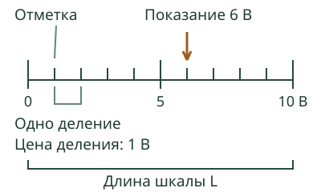
Корректор нуля – механизм, с помощью которого прибор можно подстраивать таким образом, чтобы нуль совпадал с соответствующей отметкой шкалы.
Характеристики средства измерения
Показание – это значение величины, формируемое средством измерений или измерительной системой.
Показание часто представляется в виде позиции указателя на дисплее для аналоговых выходов, отображенного или напечатанного числа для цифровых выходов, кодовой комбинации для кодовых выходных сигналов или приписанного значения величины для материальных мер.
Показание и соответствующее значение измеряемой величины не обязательно являются значениями величин одного рода.
Диапазон показаний средства измерения – область значений шкалы прибора, ограниченная начальным и конечным значениями шкалы.
Номинальное значение величины – это округленное или приближенное значение величины, приписанное средству измерений, которым следует руководствоваться при его применении.
Значение величины, приписанное мере или партии мер при изготовлении называют номинальным значением меры.
Пример. Резисторы с номинальным значением 1 Ом, гиря с номинальным значением 1 кг, –20 °С как максимальная температура по Цельсию при хранении. Нередко номинальное значение указывают на мере.
Действительное значение меры – это значение величины, приписанное мере на основании ее калибровки или поверки.
Примеры:
Гиря может иметь номинальное значение массы 1 кг, а по результатам её калибровки ей приписывают значение массы с соответствующей неопределённостью. Это значение может отличаться от номинального. Килограмм в Российской Федерации определяется через фиксированное числовое значение постоянной Планка h, равное 6,62607015 · 10⁻³⁴ Дж·с. Международный платиноиридиевый прототип имеет историческое значение и более не определяет единицу массы.
Для номинального диапазона показаний от –10 В до +10 В номинальный размах показаний составит 20 В.
Время отклика (при скачкообразном воздействии) – это интервал времени от момента, когда значение величины на входе средства измерений или измерительной системы скачкообразно изменяется до определенного уровня (значения), до момента, когда соответствующее показание средства измерений или измерительной системы достигает установившегося конечного значения и остается в заданных пределах.
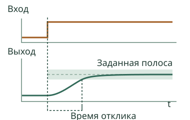
Инструментальный дрейф – это непрерывное или ступенчатое изменение показаний во времени, вызванное изменениями метрологических характеристик средства измерений.
Инструментальный дрейф не связан ни с изменением измеряемой величины, ни с изменением любой выявленной влияющей величины.
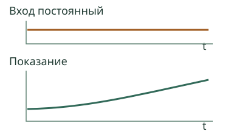
Диапазон измерений; рабочий диапазон – это множество значений величин одного рода, которые могут быть измерены данным средством измерений или измерительной системой с указанными инструментальной неопределенностью или указанными показателями точности при определенных условиях.
Чувствительность (средства измерений) – это отношение изменения показаний средства измерения к вызывающему его изменению измеряемой величины.
Для показывающего прибора со шкалой и указателем:
Обозначения в формуле
где Δa – изменение положения указателя в миллиметрах или делениях шкалы;
ΔX – изменение измеряемой величины, вызвавшее перемещение указателя на Δa.
Для средств измерений с равномерной шкалой:
Обозначения в формуле
где a – положение указателя в миллиметрах или делениях шкалы;
X – значение измеряемой величины;
N – число делений шкалы;
XН – нормирующее значение шкалы прибора (за нормирующее значение
у амперметров и вольтметров принимается верхний предел измерений СИ).
Где легче заметить изменение напряжения?
Две шкалы одинаковой длины, по 20 равных делений. Сначала предположите ответ.
Изменение одинаковое — 0,5 В. На диапазоне 0–5 В стрелка переместилась вдвое дальше: чувствительность выше.Цена деления сама по себе не определяет точность.
Пояснение и границы
Главное. Чувствительность S = Δa/ΔU. Для линейной шкалы на 20 делений S = 20/Uмакс = 1/c, где c = Uмакс/20 — цена деления. Цена деления — разность значений напряжения у соседних отметок. Приращение Δa = S · ΔU выражено в делениях. При ΔU = 0,5 В стрелки перемещаются на 1 и 2 деления. Для шкалы 0–10 В: S = 2 дел./В, c = 0,5 В/дел.; для шкалы 0–5 В: S = 4 дел./В, c = 0,25 В/дел.
Границы модели. Две идеальные линейные шкалы одинаковой длины, каждая на 20 равных делений. В опыте общий вход однократно увеличивается с 2 до 2,5 В. Кнопка повтора возвращает обе стрелки к 2 В. Погрешность, шум и порог чувствительности не моделируются.
Без JavaScript показан итог опыта: напряжение 2 → 2,5 В, положения стрелок 4 → 5 и 8 → 10 делений. Для запуска и повтора нужен JavaScript.
Порог чувствительности (средства измерений) – это наименьшее значение изменения величины, начиная с которого может осуществляться ее измерение данным средством измерения.
Если самое незначительное изменение массы, которое вызывает перемещение стрелки весов, составляет 10 мг, то порог чувствительности весов равен 10 мг.
Порог чувствительности может зависеть от шума и значения измеряемой величины.
Влияющие величины и условия применения
Нормальное значение (влияющей величины) – это значение влияющей величины, к которому приводятся результаты измерений одной и той же величины, выполненные в разных условиях.
Нормированные условия измерений; рабочие условия измерений – это условия измерений, которые должны выполняться во время измерения для того, чтобы средство измерений или измерительная система функционировали в соответствии со своим назначением.
Предельные условия (измерений) – это условия измерений, характеризуемые экстремальными значениями измеряемой и влияющих величин, которые средство измерений или измерительная система может выдержать без разрушений и ухудшения метрологических характеристик, если они впоследствии будут использоваться в своих нормированных условиях измерения.
Сохранение метрологических характеристик
Метрологическая исправность (средства измерений) – это состояние средства измерений, при котором все его нормируемые метрологические характеристики соответствуют установленным требованиям.
Метрологическая надежность (средства измерений) – это надежность средства измерений, в части сохранения его метрологической исправности.
Метрологический отказ (средства измерений) – это выход метрологической характеристики средства измерений за установленные пределы.
Пример. Если погрешность средства измерений класса точности 0,01 стала превышать 0,01%, то это значит, что произошел метрологический отказ и средство измерений уже не соответствует установленному ранее классу точности. Если не установлены технические неполадки, то средству измерений может быть присвоен другой, более низкий класс точности.
Стабильность (средства измерений) – это свойство средства измерений, отражающее неизменность во времени его метрологических характеристик.
Свойства и метрологические характеристики средств измерений
Метрологическая характеристика (средства измерений) (MX) – это характеристика одного из свойств средства измерений, влияющая на результат измерений.
Для каждого типа средств измерений устанавливают свои метрологические характеристики.
Нормируемые метрологические характеристики (типа средства измерений) – это совокупность метрологических характеристик данного типа средств измерений, устанавливаемая нормативными документами на средства измерений.
Точностные характеристики (средства измерений) – это совокупность метрологических характеристик средства измерений, влияющих на точность измерения.
К точностным характеристикам относят погрешность средства измерений, нестабильность, смещение нуля.
Точность (средства измерений) – это качество средства измерений, отражающее близость к нулю его погрешности.
Считается, что чем меньше погрешность, тем точнее средство измерений.
Класс точности – это обобщенная характеристика данного типа средств измерений, как правило, отражающая их уровень точности и выражаемая точностными характеристиками средств измерений (см. раздел 6.2).
У аналоговых приборов с резконеравномерной шкалой, в том числе у омметров, класс точности К так же выражается одним числом и записывается на циферблате прибора в виде числа с подчеркиванием (рис. 15б). Класс точности здесь означает, что максимальная приведенная погрешность не должна превышать его значения. Для аналоговых омметров установлены следующие классы точности: 0,05; 0,1; 0,2; 0,5; 1; 1,5; 2; 2,5; 3; 5; 10; 20.
Жирная шкала Ω: 0 → 5 → 10 → 20 → 30 → 50 → 100 → 200 → ∞. Стрелка показывает около 10 Ом; длина шкалы L = 62 мм, отсчёт длины lи = 25 мм ведётся от крайней левой отметки. Шкала развёрнута в линию для объяснения приведённой погрешности.
Другая, обратная шкала тестера относится к kΩ, nF: ∞ → 20 → 10 → 5 → 3 → 2 → 1 → 0,5 → 0,3 → 0,2 → 0,1 → 0. Её направление не переносится на выделенную Ω-шкалу. Для разбора выделена шкала Ω; остальные диапазоны здесь не показаны.
Рис. 15б. Расчет приведенной погрешности измерения сопротивления
тестером 43101 по шкале «Ω» (выделена жирно)
Класс точности применяется и к материальным мерам.
Предел допускаемой погрешности (средства измерений) – это наибольшее значение погрешности средства измерений (без учета знака), устанавливаемое нормативным документом для данного типа средств измерений, при котором оно еще признается метрологически исправным.
Обычно устанавливают пределы допускаемой погрешности, т. е нижнюю и верхнюю границы интервала, за которые не должна выходить погрешность.
Пределы допускаемой относительной погрешности измерения сопротивления омметром рассчитываются по формуле:
Обозначения в формуле
где L – длина всей шкалы омметра, мм (рис. 15б);
LИ – длина части шкалы от крайней левой отметки до положения стрелки прибора при измерении, мм (рис. 15б).
Длина шкалы L указывается в паспорте прибора, но ее и две другие длины можно измерить линейкой.
Виды погрешностей средства измерений
Погрешность средства измерений – это разность между показанием средства измерений и известным опорным (действительным) значением величины.
По характеру изменения погрешности
Систематическая погрешность средства измерений – это составляющая погрешности средства измерений, принимаемая за постоянную или закономерно изменяющуюся.
Систематическая погрешность данного средства измерений, как правило, будет отличаться от систематической погрешности другого экземпляра средства измерений этого же типа, вследствие чего для группы однотипных средств измерений систематическая погрешность может иногда рассматриваться как случайная погрешность. К систематическим погрешностям относят погрешности градуировки шкалы, погрешности, обусловленные неточностью меры.
Случайная погрешность средства измерений – это составляющая погрешности средства измерений, изменяющаяся случайным образом.
Случайные погрешности вызываются большим числом отдельных (в том чисел и неизвестных) причин, действующих независимо друг от друга, поэтому нельзя заранее предвидеть их появление и исключить опытным путем.
Статистическая обработка результатов многократных равноточных измерений позволяет оценить характеристики случайной составляющей — разброс и распределение. Значение погрешности отдельного наблюдения относительно неизвестного истинного значения этим не определяется.
По форме выражения погрешности
Абсолютная погрешность средства измерений – погрешность средства измерений, выраженная в единицах измеряемой величины.
(66б)Относительная погрешность средства измерений – это погрешность средства измерений, выраженная отношением абсолютной погрешности средства измерений к опорному значению измеряемой величины.
(67)Приведенная погрешность (средства измерений) – это погрешность средства измерений, выраженная отношением абсолютной погрешности средства измерений к нормирующему значению величины.
Часто за нормирующее значение принимают максимальное значение диапазона измерений или разность между максимальным и минимальным значениями диапазона измерений.
Приведенную погрешность обычно выражают в процентах.
(68)Приведенная погрешность у приборов с резконеравномерной шкалой,
в том числе у электромеханических омметров, рассчитывается по формуле(69)где L – длина всей шкалы омметра, мм;
LИ – длина части шкалы от крайней левой отметки до положения стрелки прибора при измерении, мм;
LД – длина части шкалы от крайней левой отметки до положения стрелки, которое она бы занимала, показывая действительное значение, мм.
Пример. При поверке тестера 43101 по шкале «Ω» (рис. 15б) проведено измерение сопротивления резистора, действительное значение которого RД, определенное с помощью эталонного прибора, равно 9,5 Ом. Стрелка поверяемого тестера отклонилась при измерении на 25 мм, что соответствует RИ = 10 Ом.
С помощью линейки определяем L = 62 мм, LД = 23,5 мм и вычисляем
По условиям применения
Основная погрешность (средства измерений) – это погрешность средства измерений, применяемого в нормальных условиях.
Дополнительная погрешность (средства измерений) – это составляющая погрешности средства измерений, возникающая дополнительно к основной погрешности вследствие отклонения какой-либо из влияющих величин от нормального ее значения или вследствие ее выхода за пределы нормальной области значений.
По режиму работы
Статическая погрешность (средства измерений) – это погрешность средства измерений, применяемого для измерения постоянной величины.
Динамическая погрешность (средства измерений) — это разность между погрешностью средства измерений в динамическом режиме и его статической погрешностью, соответствующей значению величины в данный момент времени.
По зависимости от измеряемой величины
Аддитивная погрешность – составляющая абсолютной погрешности средства измерения, остающаяся постоянной во всем диапазоне измерений (не зависит от размера измеряемой величины).
Мультипликативная погрешность – составляющая абсолютной погрешности средства измерения, линейно зависящая от значения измеряемой величины.